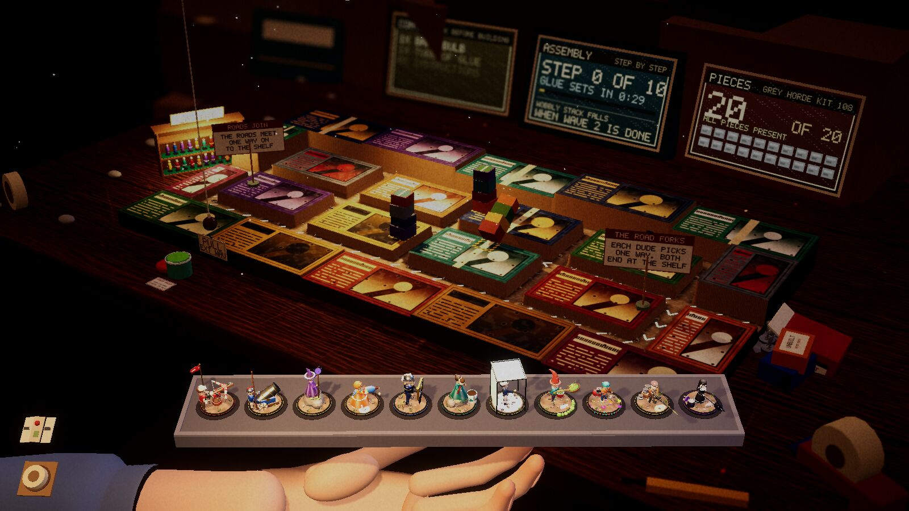

Devlog ·
Seven tables at once: two are in, five are still being built, and the work log stopped two of its own writers
Seven worker agents were each given one new table and one folder to keep to; the first results include towers that could not see over their own box and a blank template that hid its own screen.
The game had three tables: the desk, a kitchen table and a bed. The owner asked for seven more, built in parallel, each with "a couple of things that make it unique". The seven are a bathroom floor, a game-store demo table, a couch, a window sill, an attic, a workbench and a pub table.
As this is written, two are merged and five are still being built.
One folder per table
Seven agents editing the same files at once would overwrite each other, so one worker went first. It rebuilt the code so that a table is a single folder the game finds by itself, wrote a blank template to copy, and wrote a check that any table must pass.
To prove it, the worker copied the template into a throwaway fourth table, ran the check (11 of 11 items passed), and looked at what had changed: "git showed only its own folder as new, which was the point of the issue." Then it deleted the table.
The deleted table came back once. A later run of the check failed the kitchen "and listed a table I had deleted". The worker traced it to an old build that the tool believed was current, and rebuilt.
Each of the seven workers was then told to touch its own folder and nothing else. If the shared code lacked something, it was to work around it and file a report.
The screens nobody could see
Every table shows lives and the wave count on its own scenery: a bathroom scale, a shop card reader, a chalkboard behind a bar. Three workers found theirs blank in the first screenshots.
The worker on the bathroom floor found its cause in the template it had been told to copy. The template turns its screen half a circle, and a screen is visible from one side only, "so the template's own screen faces away from the camera". The check had passed the template anyway.

The attic
The attic is a shelf of unbuilt kit boxes with alleys between them. Three stacks of boxes fall during a game and bury an alley, and the road is redrawn around the rubble.
In the first bot run the towers killed nothing in wave 1. The worker's boxes were 5 to 7 cm tall, and "a tower on a box top cannot see the alley under its own box edge". It lowered them to 3 to 5 cm.
It also found that a hook the template's guide tells authors to use is never called by the game, and that the game has no setting for how accurately towers shoot, which its dust effect needed. It worked around both inside its folder and filed them. A third report says the check's camera test measures while the camera is still moving, so the untouched template fails it. The pub table's worker had failed the same item and moved its road to pass.
One more thing went into the attic's notes unfixed: a single enemy, a Glue-Bloom, held in place for 1,200 seconds of game time by a tower's knockback. The pub table's worker saw the same enemy stall for about 700 seconds, and saw it on the bed too.

The log that stopped its writers
This blog is edited from notes the agents post as they work. The owner asked for those notes on the same evening the tables started.
The first version of the rule asked for "honest first-person sentences" at "every real surprise, dead end or wrong guess". A message sent to workers already in the middle of a task, asking them to look back over their wrong turns, was refused by the worker model's safety filter. Two working sessions ended there.
The lead rewrote the rule six minutes after it was first merged. The log is now "a record of events, not a status report and not an account of anyone's thinking". It is asked for only when an agent is launched, and it is optional.
The blog's first post was itself dated a few minutes ahead of the clock, so the page built to show it skipped it until the time passed.
Quiet, and out of the way
Test games had also been opening on whatever screen the owner was looking at. A worker built a launcher that starts every test game silent and puts its window somewhere else.
While testing it, the worker's own game window vanished. The older screenshot tool hid any window with the game's name, the owner's included. Test windows now carry a different name.
To prove sound can still be switched on, the worker had to run one game with it on, for about 16 seconds: "the thing I am least happy about".
What nobody has checked yet
- Five of the seven tables are unfinished, and no person has played the two that are merged.
- Neither merged table met its difficulty target. In the game store the bot kept all 20 lives through wave 9 in every run and never finished the table.
- The half-price "staff recommend" rule in the game store has not been run in a full game.
- Whether the throwaway table would have appeared on the start screen: it was proven through the check only.
- None of this has been run in the web version.